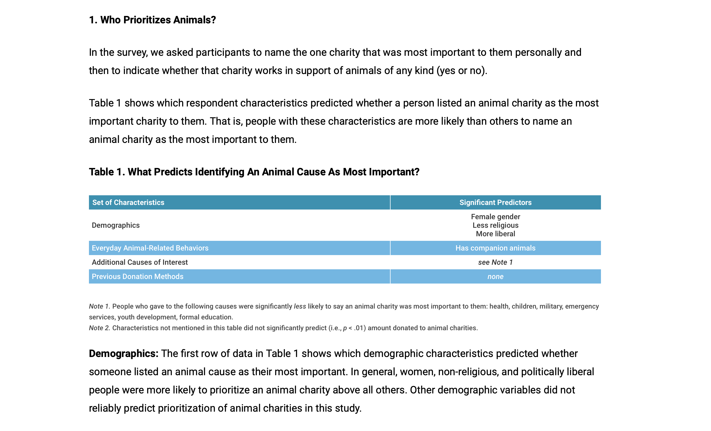

Primary & Secondary Research
For this website redesign, I researched my client, Southeast Corgi Rescue, as well as various other animal non-profit websites. Also, aiming to be well informed, I also researched related articles and news in this field.
Primary Research
Research on the non-profit Southeast Corgi Rescue
All design problems go through three main phases: inspiration, ideation, and implementation. In the ideation phase, is research. By researching, we can learn everything there is to know about our client before we have enough information to come up with the adequate solutions.
The first part of the research consists of compiling all of the information about the organization, through their current online website, advertisement and social media they may have posted, and any other relevant material we can find. Gathering images of the current website is especially important. These collected images are used to visually show what has and has not worked for the organization in the past for their website.
Listed on their site, it is their mission, stating...
“Southeast Corgi Rescue Incorporated is a non-profit, all-volunteer group of dog lovers serving the states of NC, SC and GA. Our rescue is breed specific and works with corgis and corgi mixes.
Dogs in our care are vetted, spayed or neutered and receive all appropriate veterinary care and treatment, to include vaccinations and microchips. Our dogs are placed in nurturing foster homes throughout the three states and are socialized and trained until we feel they can be successfully placed in a suitable, caring permanent home.”
As time and resources allow, we also strive to:
1) Assist individuals with challenges pertaining to their corgis.
2) Raise funds to support our organization.
3) Guide and educate the public in issues related to animal welfare and the humane and proper care of dogs.
Here are some images of Southeast Corgi Rescue’s website as well as images of their various social media pages.
Secondary Research
Important stats pertaining to animal rescue:
- Approximately 6.5 million companion animals enter U.S. animal shelters nationwide every year. Of those, approximately 3.3 million are dogs.
- Of the 6.5 million cats and dogs brought into shelters, just under 50% get adopted.
- Approximately 1.6 million dogs are adopted from shelters every year.
- Each year, approximately 1.5 million shelter animals are euthanized (670,000 dogs).
- #1 Most Common Breed in Shelters: American Pit Bull Terrier
- #1 Most Common Breed Adopted from Shelters: Golden Retriever
- About 30% of animals in shelters are left there by their owners.
- Animal shelters cost US citizens, almost $2 billion every year.
- There are 3,500 animal shelters in the US.
- Altogether, there are around 14,000 shelters and rescue groups in the U.S.
The worst part: of the 3 million cats and dogs euthanized in shelters each year, approximately 2.4 million (80%) are healthy and treatable and could have been adopted into new homes. - the Humane Society
Relevant Articles to Southeast Corgi Rescue:
How the COVID-19 Pandemic is affecting Adoptions in the USA:
COVID-19 has impacted everything in the world around us - even the amount of animals that are getting rescued. Because people are feeling lonely as they quarantine alone in their homes and have more time to potentially spend on pets, the rate at which dogs and cats are getting adopted has skyrocketed.
The New York Times writes:
“KC Pet Project, a nonprofit animal shelter in Kansas City, Mo., received 250 requests to foster pets in four days, according to Tori Fugate, a spokeswoman for the shelter. Usually, getting 10 pets placed in foster homes is a good day for the organization. “To have that many new people sign up is really a big spike,” she said.”
Who donates to animal rescue sites, such as this one?
According to the chart above, women, non-religious, and politically liberal people were more likely to prioritize an animal charity above all others.
There are people who would rather donate to health, children’s, military, emergency services, youth development, and/or formal education charities rather than an animal charity. These individuals were less likely than others to prioritize animals over other charitable interests.
In another chart, also on the faunalytics.com website, it shows that high income individuals, people who undertake vegan diets and have a hobby that involves animals, such as a dog trainer.
What Predicts Having A Recurring Donation To An Animal Cause? According to this website, people who are more religious are most likely to give a recurring donation to an animal cause.
Successful Animal Rescue Sites
ASPCA & The Humane Society
The American Society for the Prevention of Cruelty to Animals (ASPCA) and The Humane Society are both also non-profit, animal organizations. Seeing as Southeast Corgi Rescue is too, I looked for advice here. These two sites are widely known, used, and donated to. For these two sites, the user immediately is struck with imagery of sick animals that pulls at the viewers heartstrings. They appeal to your emotions. While I do not want to picture sick corgis on the Southeast Corgi Rescue site, something is to be said for the way these images just pull you in and want to make you donate. Along with this, they have buttons that are easy to navigate such as the “Donate and “Give Monthly” button. These two sites are very easy and clear to navigate, which I am striving to achieve with the Southeast Corgi Rescue site as well. They also give you options to stay up to date with them in the footer and in the banner, such as signing up for email. All these elements and more seen on their websites make a really strong website that has been demonstrated to work for these two sites. These two websites will give me insight on what works and what does not for Animal Rescue sights in order to improve the Southeast Corgi Rescue site.
Interviews
I was able to meet with the two potential users of the Southeast Corgi Rescue website to gain important primary information about SCR.
User Interviews: Kasra & Cathy
My first interview was with Kasra. Kasra is a 32-year-old professor of science-based in Greenville, South Carolina. He just recently adopted his first dog with his wife but had been looking into dog adoption for many years. Before his recent adoption, he spent a lot of time looking at different animal humane society sites. He is equally passionate about science as he is about dogs, specifically corgis with their short legs and chubby bodies.
Summary: He found out about the Southeast Corgi Rescue Website through a Google search and has been looking to adopt a corgi from the site. He really likes how the website displays the list of dogs available and how they maintained the site by posting updates about COVID and different topics. Kasra dislikes the lack of mobile compatibility and made it apparent how important he believes that aspect should be in a successful website redesign. He also mentions how there should be consistent use of pictures: a set width and amount of high-quality pictures would be great. He says more information about each dog would be extremely useful and the homepage needs more updating. The homepage and navigation bar are very confusing; the drop-down menu needs major help or a total redesign. Another issue he mentioned was the way of contacting Southeast Corgi Rescue and how it was confusing, with not a clear email to contact and a very poorly set up adoption form. The main issues were inconsistent layout, overall confusion regarding how to use the website, and major disorganization.
My second interview was with Cathy. Cathy is a 66-year-old home-health nurse. She has been rescuing dogs for many years and enjoys it greatly. Most of her dogs were given to her by owners that could not handle their care any longer. Her sons and husband have brought her many dogs that needed rescuing over the years and Cathy has welcomed them and given them a good home. She has had many, many dogs: Zwinky, a pitbull, Flip and Tigger, both yellow labs, Brownie, a Britney Spaniel, Shelia, a Shetland sheepdog, and several more.
Summary: She said one of the most important things to her when adopting off websites are high-quality, consistent pictures of the dogs and a long description telling them about them. She says that qualities such as “how old they are, special needs if they are house-trained and up to date on shots” are especially important to know and should always be included. She said the website was not clear on how to get in touch with them - she particularly stressed the importance of a phone number, which is surprisingly not listed on the Southeast Corgi Rescue website. She also said linked social media accounts are important to her, such as Instagram or Facebook. Cathy says that she would want the website to be clean and organized with not too many frills and unneeded elements, but instead placing importance on the dogs that need homes. While the website is clean and informative, it should also be warm and friendly.